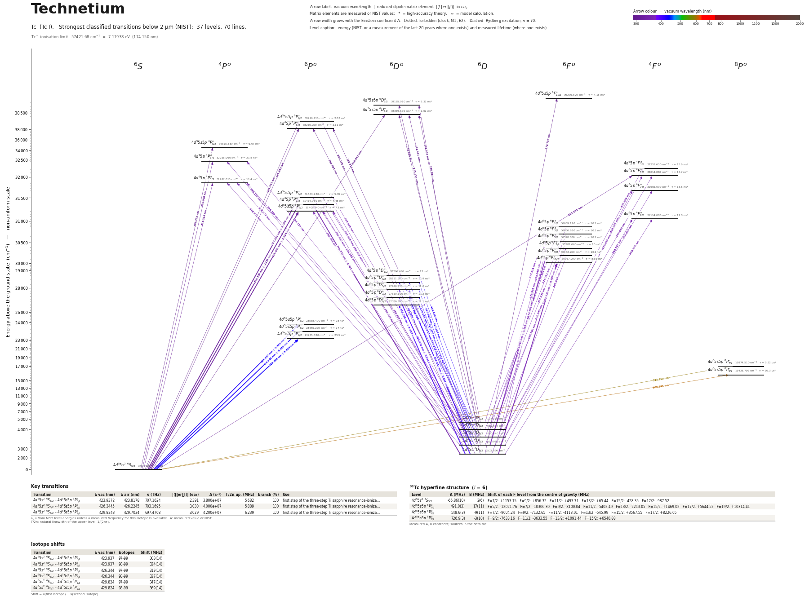

Technetium energy level diagram
Energy levels and transitions of neutral technetium (Tc I): the 70 strongest classified lines below 2 µm from the NIST Atomic Spectra Database and the 37 levels they connect, each line with its vacuum wavelength, frequency and, for 12 of them, the reduced dipole matrix element derived from the NIST transition rate. Measured lifetimes, transition rates, hyperfine constants and isotope shifts from the literature are included, each with its citation.
Hover a line or a level to isolate it, click to keep it selected. Scroll to zoom, drag to move.

Download: diagram (PDF) diagram (SVG) transitions (CSV) levels (CSV) source code

Key transitions of technetium
| Transition | λ vac (nm) | λ air (nm) | ν (THz) | |⟨J‖er‖J′⟩| (ea₀) | A (s⁻¹) | Γ/2π up. (MHz) | branch (%) | Use |
|---|---|---|---|---|---|---|---|---|
| 4d55s2 6S5/2 – 4d55s5p 6P°3/2 | 423.9372 | 423.8178 | 707.1624 | 2.391 | 3.800e+07 | 5.682 | 100 | first step of the three-step Ti:sapphire resonance-ioniza… |
| 4d55s2 6S5/2 – 4d55s5p 6P°5/2 | 426.3445 | 426.2245 | 703.1695 | 3.030 | 4.000e+07 | 5.889 | 100 | first step of the three-step Ti:sapphire resonance-ioniza… |
| 4d55s2 6S5/2 – 4d55s5p 6P°7/2 | 429.8243 | 429.7034 | 697.4768 | 3.629 | 4.200e+07 | 6.239 | 100 | first step of the three-step Ti:sapphire resonance-ioniza… |
λ, ν from NIST level energies unless a measured frequency for this isotope is available. A: measured value or NIST. Γ/2π: natural linewidth of the upper level, 1/(2πτ).
99Tc hyperfine structure (I = 9/2)
| Level | A (MHz) | B (MHz) | Shift of each F level from the centre of gravity (MHz) |
|---|---|---|---|
| 4d55s2 6S5/2 | -107.34(8) | 0.3(20) | F=2: +1476.06 F=3: +1153.95 F=4: +724.51 F=5: +187.76 F=6: -456.26 F=7: -1207.50 |
| 4d55s5p 6P°7/2 | 799.99(26) | -44(4) | F=1: -15419.93 F=2: -13813.68 F=3: -11405.61 F=4: -8197.28 F=5: -4190.80 F=6: +611.23 F=7: +6205.67 F=8: +12588.87 |
| 4d55s5p 6P°5/2 | 894.08(28) | 57(4) | F=2: -12267.29 F=3: -9602.27 F=4: -6042.22 F=5: -1581.38 F=6: +3787.40 F=7: +10072.75 |
| 4d55s5p 6P°3/2 | 1183.27(27) | -13(3) | F=3: -9767.75 F=4: -5026.27 F=5: +892.70 F=6: +7983.92 |
Measured A, B constants; sources in the data file.
Isotope shifts
| Transition | λ vac (nm) | Isotopes | Shift (MHz) |
|---|---|---|---|
| 4d55s2 6S5/2 – 4d55s5p 6P°3/2 | 423.937 | 97-99 | 308(14) |
| 4d55s2 6S5/2 – 4d55s5p 6P°3/2 | 423.937 | 98-99 | 324(14) |
| 4d55s2 6S5/2 – 4d55s5p 6P°5/2 | 426.344 | 97-99 | 313(14) |
| 4d55s2 6S5/2 – 4d55s5p 6P°5/2 | 426.344 | 98-99 | 327(14) |
| 4d55s2 6S5/2 – 4d55s5p 6P°7/2 | 429.824 | 97-99 | 347(14) |
| 4d55s2 6S5/2 – 4d55s5p 6P°7/2 | 429.824 | 98-99 | 369(14) |
Shift = ν(first isotope) − ν(second isotope).
Listed Tc transitions below 2 µm
| Lower level | Upper level | λ vacuum (nm) | λ air (nm) | ν (THz) | Type | |⟨J‖er‖J′⟩| (ea₀) | A (s⁻¹) | Branching (%) | Source of matrix element / A |
|---|---|---|---|---|---|---|---|---|---|
| 4d55s2 6S5/2 | 4d55s5p 6D°3/2 | 260.9631 | 260.8851 | 1148.7927 | E1 | – | – | – | – |
| 4d55s2 6S5/2 | 4d55s5p 6P°7/2 | 261.5013 | 261.4232 | 1146.4282 | E1 | – | – | – | – |
| 4d55s2 6S5/2 | 4d65p 6P°5/2 | 261.6654 | 261.5873 | 1145.7093 | E1 | – | – | – | – |
| 4d65s 6D9/2 | 4d55s5p 6F°11/2 | 272.7499 | 272.6691 | 1099.1480 | E1 | – | – | – | – |
| 4d65s 6D9/2 | 4d55s5p 6D°9/2 | 273.1336 | 273.0528 | 1097.6037 | E1 | – | – | – | – |
| 4d65s 6D7/2 | 4d55s5p 6D°9/2 | 278.2872 | 278.2051 | 1077.2772 | E1 | – | – | – | – |
| 4d65s 6D9/2 | 4d55s5p 6P°7/2 | 280.3646 | 280.2820 | 1069.2949 | E1 | – | – | – | – |
| 4d65s 6D7/2 | 4d65p 6P°5/2 | 285.9934 | 285.9094 | 1048.2495 | E1 | – | – | – | – |
| 4d65s 6D5/2 | 4d55s5p 6D°3/2 | 288.8582 | 288.7735 | 1037.8533 | E1 | – | – | – | – |
| 4d65s 6D5/2 | 4d65p 6P°5/2 | 289.7189 | 289.6341 | 1034.7699 | E1 | – | – | – | – |
| 4d55s2 6S5/2 | 4d55s5p 4P°5/2 | 289.7217 | 289.6368 | 1034.7601 | E1 (intercombination) | – | – | – | – |
| 4d65s 6D3/2 | 4d55s5p 6D°3/2 | 291.4005 | 291.3152 | 1028.7987 | E1 | – | – | – | – |
| 4d65s 6D1/2 | 4d55s5p 6D°3/2 | 292.9042 | 292.8186 | 1023.5169 | E1 | – | – | – | – |
| 4d55s2 6S5/2 | 4d65p 4P°3/2 | 310.0000 | 309.9101 | 967.0723 | E1 (intercombination) | – | – | – | – |
| 4d55s2 6S5/2 | 4d65p 4F°5/2 | 312.3554 | 312.2649 | 959.7799 | E1 (intercombination) | – | – | – | – |
| 4d55s2 6S5/2 | 4d65p 4P°5/2 | 313.2144 | 313.1237 | 957.1477 | E1 (intercombination) | – | – | – | – |
| 4d55s2 6S5/2 | 4d55s5p 6P°3/2 | 317.4207 | 317.3289 | 944.4641 | E1 | 2.330 NIST | 8.600e+07 NIST | 51.2 | NIST ASD (accuracy n/a) |
| 4d55s2 6S5/2 | 4d65p 6P°7/2 | 318.3289 | 318.2369 | 941.7695 | E1 | 2.229 NIST | 3.900e+07 NIST | 17.5 | NIST ASD (accuracy n/a) |
| 4d55s2 6S5/2 | 4d55s5p 6P°5/2 | 318.4030 | 318.3109 | 941.5504 | E1 | 2.314 NIST | 5.600e+07 NIST | 40.9 | NIST ASD (accuracy n/a) |
| 4d65s 6D9/2 | 4d65p 6P°7/2 | 346.7267 | 346.6274 | 864.6362 | E1 | 4.481 NIST | 1.220e+08 NIST | 54.7 | NIST ASD (accuracy n/a) |
| 4d65s 6D7/2 | 4d65p 4F°5/2 | 347.6580 | 347.5585 | 862.3200 | E1 (intercombination) | – | – | – | – |
| 4d65s 6D7/2 | 4d65p 4P°5/2 | 348.7225 | 348.6227 | 859.6879 | E1 (intercombination) | – | – | – | – |
| 4d65s 6D5/2 | 4d65p 4P°3/2 | 350.1705 | 350.0703 | 856.1329 | E1 (intercombination) | – | – | – | – |
| 4d65s 6D9/2 | 4d65p 4F°9/2 | 350.3708 | 350.2706 | 855.6434 | E1 (intercombination) | – | – | – | – |
| 4d65s 6D7/2 | 4d65p 4F°7/2 | 352.6828 | 352.5820 | 850.0342 | E1 (intercombination) | – | – | – | – |
| 4d65s 6D3/2 | 4d65p 4F°3/2 | 353.9688 | 353.8676 | 846.9461 | E1 (intercombination) | – | – | – | – |
| 4d65s 6D5/2 | 4d65p 4P°5/2 | 354.2774 | 354.1762 | 846.2083 | E1 (intercombination) | – | – | – | – |
| 4d65s 6D7/2 | 4d65p 6P°7/2 | 355.0740 | 354.9726 | 844.3097 | E1 | – | – | – | – |
| 4d65s 6D7/2 | 4d55s5p 6P°5/2 | 355.1662 | 355.0648 | 844.0906 | E1 | – | – | – | – |
| 4d65s 6D1/2 | 4d65p 4P°3/2 | 356.1341 | 356.0324 | 841.7965 | E1 (intercombination) | – | – | – | – |
| 4d65s 6D3/2 | 4d65p 4F°5/2 | 356.9868 | 356.8849 | 839.7858 | E1 (intercombination) | – | – | – | – |
| 4d65s 6D3/2 | 4d65p 4P°5/2 | 358.1092 | 358.0070 | 837.1536 | E1 (intercombination) | – | – | – | – |
| 4d65s 6D5/2 | 4d65p 4F°7/2 | 358.3657 | 358.2634 | 836.5547 | E1 (intercombination) | – | – | – | – |
| 4d65s 6D7/2 | 4d65p 4F°9/2 | 358.8967 | 358.7943 | 835.3168 | E1 (intercombination) | – | – | – | – |
| 4d65s 6D5/2 | 4d55s5p 6P°3/2 | 359.6684 | 359.5658 | 833.5247 | E1 | – | – | – | – |
| 4d65s 6D5/2 | 4d65p 6P°7/2 | 360.8348 | 360.7319 | 830.8301 | E1 | – | – | – | – |
| 4d65s 6D5/2 | 4d55s5p 6P°5/2 | 360.9300 | 360.8271 | 830.6110 | E1 | – | – | – | – |
| 4d65s 6D9/2 | 4d65p 6F°9/2 | 362.8398 | 362.7364 | 826.2391 | E1 | – | – | – | – |
| 4d65s 6D3/2 | 4d55s5p 6P°3/2 | 363.6184 | 363.5148 | 824.4700 | E1 | – | – | – | – |
| 4d65s 6D9/2 | 4d65p 6F°11/2 | 363.7104 | 363.6068 | 824.2614 | E1 | 6.689 NIST | 1.570e+08 NIST | 100 | NIST ASD (accuracy n/a) |
| 4d65s 6D3/2 | 4d55s5p 6P°5/2 | 364.9080 | 364.8040 | 821.5563 | E1 | – | – | – | – |
| 4d65s 6D1/2 | 4d55s5p 6P°3/2 | 365.9628 | 365.8586 | 819.1883 | E1 | – | – | – | – |
| 4d65s 6D7/2 | 4d65p 6F°7/2 | 368.5800 | 368.4751 | 813.3714 | E1 | – | – | – | – |
| 4d65s 6D5/2 | 4d65p 6F°3/2 | 371.3320 | 371.2264 | 807.3435 | E1 | – | – | – | – |
| 4d65s 6D7/2 | 4d65p 6F°9/2 | 371.9913 | 371.8855 | 805.9126 | E1 | 5.165 NIST | 1.050e+08 NIST | 100 | NIST ASD (accuracy n/a) |
| 4d65s 6D5/2 | 4d65p 6F°5/2 | 372.7404 | 372.6345 | 804.2928 | E1 | – | – | – | – |
| 4d65s 6D3/2 | 4d65p 6F°1/2 | 374.7206 | 374.6141 | 800.0426 | E1 | – | – | – | – |
| 4d65s 6D5/2 | 4d65p 6F°7/2 | 374.7912 | 374.6847 | 799.8918 | E1 | – | – | – | – |
| 4d65s 6D3/2 | 4d65p 6F°3/2 | 375.5438 | 375.4371 | 798.2889 | E1 | – | – | – | – |
| 4d65s 6D3/2 | 4d65p 6F°5/2 | 376.9845 | 376.8774 | 795.2382 | E1 | – | – | – | – |
| 4d65s 6D1/2 | 4d65p 6F°1/2 | 377.2109 | 377.1037 | 794.7609 | E1 | – | – | – | – |
| 4d65s 6D1/2 | 4d65p 6F°3/2 | 378.0451 | 377.9378 | 793.0071 | E1 | – | – | – | – |
| 4d65s 6D9/2 | 4d65p 6D°7/2 | 398.6095 | 398.4968 | 752.0956 | E1 | 3.241 NIST | 4.200e+07 NIST | 47.2 | NIST ASD (accuracy n/a) |
| 4d65s 6D9/2 | 4d65p 6D°9/2 | 403.2762 | 403.1623 | 743.3924 | E1 | 5.718 NIST | 1.010e+08 NIST | 100 | NIST ASD (accuracy n/a) |
| 4d65s 6D7/2 | 4d65p 6D°5/2 | 405.0252 | 404.9108 | 740.1822 | E1 | – | – | – | – |
| 4d65s 6D5/2 | 4d65p 6D°3/2 | 408.9856 | 408.8702 | 733.0147 | E1 | – | – | – | – |
| 4d65s 6D7/2 | 4d65p 6D°7/2 | 409.6818 | 409.5662 | 731.7691 | E1 | 3.647 NIST | 4.900e+07 NIST | 55.1 | NIST ASD (accuracy n/a) |
| 4d65s 6D3/2 | 4d65p 6D°1/2 | 411.6226 | 411.5065 | 728.3188 | E1 | – | – | – | – |
| 4d65s 6D5/2 | 4d65p 6D°5/2 | 412.5380 | 412.4217 | 726.7026 | E1 | – | – | – | – |
| 4d65s 6D3/2 | 4d65p 6D°3/2 | 414.1008 | 413.9840 | 723.9601 | E1 | – | – | – | – |
| 4d65s 6D7/2 | 4d65p 6D°9/2 | 414.6130 | 414.4961 | 723.0658 | E1 | – | – | – | – |
| 4d65s 6D1/2 | 4d65p 6D°1/2 | 414.6295 | 414.5126 | 723.0371 | E1 | – | – | – | – |
| 4d65s 6D1/2 | 4d65p 6D°3/2 | 417.1441 | 417.0266 | 718.6784 | E1 | – | – | – | – |
| 4d65s 6D5/2 | 4d65p 6D°7/2 | 417.3699 | 417.2523 | 718.2895 | E1 | – | – | – | – |
| 4d65s 6D3/2 | 4d65p 6D°5/2 | 417.7431 | 417.6253 | 717.6480 | E1 | – | – | – | – |
| 4d55s2 6S5/2 | 4d55s5p 6P°3/2 | 423.9372 | 423.8178 | 707.1624 | E1 | 2.391 NIST | 3.800e+07 NIST | 100 | NIST ASD (accuracy n/a) |
| 4d55s2 6S5/2 | 4d55s5p 6P°5/2 | 426.3445 | 426.2245 | 703.1695 | E1 | 3.030 NIST | 4.000e+07 NIST | 100 | NIST ASD (accuracy n/a) |
| 4d55s2 6S5/2 | 4d55s5p 6P°7/2 | 429.8243 | 429.7034 | 697.4768 | E1 | 3.629 NIST | 4.200e+07 NIST | 100 | NIST ASD (accuracy n/a) |
| 4d55s2 6S5/2 | 4d55s5p 8P°7/2 | 592.6098 | 592.4456 | 505.8851 | E1 (intercombination) | – | – | – | – |
| 4d55s2 6S5/2 | 4d55s5p 8P°5/2 | 608.6905 | 608.5220 | 492.5203 | E1 (intercombination) | – | – | – | – |
Reduced dipole matrix elements follow the convention A = ω³|d|²/(3πε₀ħc³(2J′+1)), with J′ the upper level. Tags show where a number comes from: measured, NIST compilation, high-accuracy theory, or a model calculation.
Tc energy levels
Tc⁺ ionisation limit 57421.68 cm⁻¹ = 7.11938 eV (174.150 nm)
Sources
- Kron, Beerwerth, Raeder, Fritzsche, Heinke, Schoenberg, Truemper, Wendt, Phys. Rev. C 102…
- Kurucz semi-empirical calculation (K17), life4300.dat
- NIST ASD
- NIST ASD level energies
Hyperfine constants and isotope shifts are from resonance ionization spectroscopy with ~100 MHz resolution (Kron et al. 2020, open access via the GSI repository). Isotope shifts are nu(first) - nu(second). All level lifetimes in this file are THEORY (Kurucz) because no measurement exists; treat them as ~25 % estimates. nuclear_moments is an extra top-level block (not in the schema) with the moments derived in the same paper.
Atoms with measured data
- Lithium-632 levels, 85 lines
- Lithium-732 levels, 85 lines
- Beryllium-917 levels, 26 lines
- Sodium-2336 levels, 106 lines
- Magnesium-2418 levels, 61 lines
- Magnesium-2518 levels, 61 lines
- Potassium-3934 levels, 84 lines
- Potassium-4034 levels, 84 lines
- Potassium-4134 levels, 84 lines
- Calcium-4035 levels, 61 lines
- Calcium-4335 levels, 61 lines
- Rubidium-8536 levels, 94 lines
- Rubidium-8736 levels, 94 lines
- Strontium-8740 levels, 70 lines
- Strontium-8840 levels, 70 lines
- Caesium-13331 levels, 79 lines
- Barium-13744 levels, 89 lines
- Barium-13844 levels, 89 lines
- Dysprosium-16339 levels, 55 lines
- Dysprosium-16439 levels, 55 lines
- Ytterbium-17118 levels, 26 lines
- Ytterbium-17418 levels, 26 lines